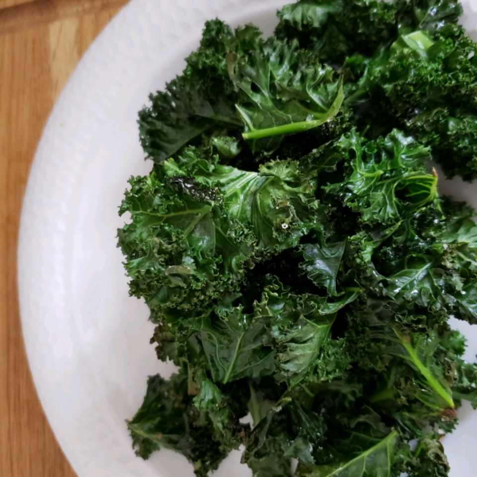

Baked Kale Chips

Description
These are a low calorie nutritious snack. Like potato chips, you cannot stop at just e
ating one. They are great for parties and a good conversation topic.
Ingredients
- 1 bunch kale
- 1 tablespoon olive oil
- 1 teaspoon seasoned salt
Steps
- Preheat an oven to 350 degrees F (175 degrees C).
Line a non insulated cookie sheet with parchment paper.
- With a knife or kitchen shears carefully remove the leaves from the thick stems
and tear into bite size pieces. Wash and thoroughly dry kale with a salad
spinner. Drizzle kale with olive oil and sprinkle with seasoning salt.
- Bake until the edges brown but are not burnt, 10 to 15 minutes.